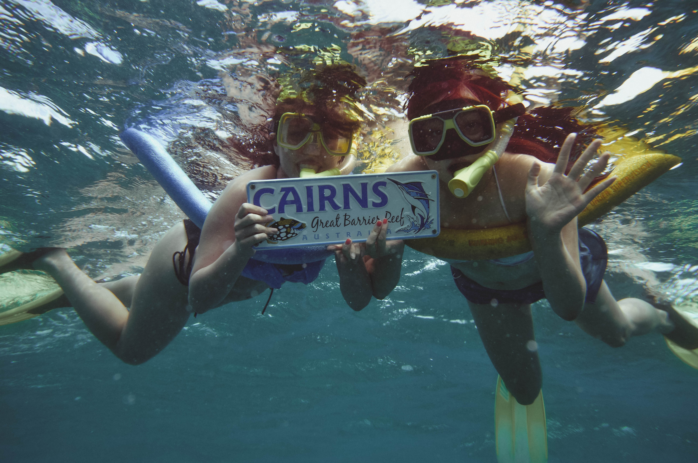

Australia & New Zealand
The decision to travel to Australia and New Zealand came to me during the fall of 2013. I was the quintessential new-grad; I still that skip in my step from post-study excitement and was ready to tackle the world. I had always entertained the thought of solo-travel and knew that I could push my boundaries by doing so, but I wasn't ready to take that leap and needed a push. After some thought, I decided that the push would come in the form of visiting my family down under. I had always wanted to visit my Aunt Daphne and her family in Brisbane, so it seemed like the opportune moment. I booked my flight, intending to go for a month and a half, and got myself ready for an adventure.
Now, I will be the first to admit that I am a very planned out person. I like to have blue-prints in my head in order to prepare myself for what lies ahead. Suffice it to say, but my travel style is to have everything booked and ready to go in order to minimize chaos. At first, I was doing my research for Australia and knew that I needed to include a side trip to New Zealand; that was a must. I also knew that I wanted to visit Cairns, home of the Great Barrier Reef, while I was there. Aside from that, the more research I did, the more I stopped myself and decided, ‘No. I need to be spontaneous. For once in your life, Karen, BE SPONTANEOUS.’ And so, I got on the flight to Brisbane having nothing booked, and nothing ready.
I stayed at my Aunt Daphne’s for the duration I was in Australia. My aunt Daphne had been studying in Hong Kong during the time that my dad and my grandparents moved to Canada, and that was where she met my Uncle Jack. Uncle Jack was a professor teaching English at the time, and they fell in love and got married, and moved back to his home country, Australia. They had two kids, my cousins Tracey and Danielle. As a family, they are extremely rambunctious. Between my aunt’s temper, my uncle’s mellow nature, and my cousins’ impatience, I knew I was walking into a war-zone. However, their love stitched them all up together and I was going to make the most of it.
They showed me around Brisbane the first few days I was there. We went to wildlife sanctuaries, explored the city, went to the countryside to see wild wallabies and kangaroos. I was in an entirely different world; and I loved every second of it. On days when my cousins were busy, I would help my aunt out at her shop. She ran a local fish and chips shop and very much enjoyed my company. I would help out at the diner and felt like I was in 50’s retro movie. It was absolutely fantastic.
My cousins and I then decided to take a trip (being spontaneous - yes!). We booked a flight to Sydney where we stayed for a few days. My uncle had flew in with us, but only booked a one way ticket which was suspicious (will get back to this later). We visited the Sydney Opera House, Taronga Zoo, and had dinner and drinks by the pier. I remember the moment when I was outside the Sydney Opera House; I laid down on the steps and looked up at the sunset-filled sky painted with hues or orange, pink, and purple. As I heard the echoes of an orchestra playing from within the Opera House, I remember thinking to myself, ‘I hope everyone gets the chance to feel as blissful as I do now.’
After Sydney, we flew to Cairns to explore the Great Barrier Reef. We were only there for 3 days, so as soon as we landed, we went to find a boat tour to take us snorkelling and diving. To our dismay, most of the tours had sold out ahead of time. At that moment, I was angry at myself for not going with my gut of booking beforehand. Luckily, we found one tour boat that had some seats left and quickly signed up. The next day, we were off on the all day boat tour.
The Great Barrier Reef was a 2 hour boat ride away from the shores of Cairns. I had tried to prepare myself for the seasickness, but nothing could have prepared for what was to come. I had taken my medication too late, and within 30 minutes of the boat ride, I was nauseous out of my mind. I can’t recall how many times I threw up on the boat that day, and I thought I was saved when the boat finally stopped, but it got worse. The waves at sea were rippling, and at rest, the boat swayed and swayed. Luckily, it was time for our dive and we got right in the water after putting on our wet suits.
It was my first time diving, and it was a bit nerve wrecking at first. My cousin Tracey was deathly afraid of deep sea waters, so halfway through, she had to go back to the boat. Once we were underwater, we had REALLY entered another world. I couldn’t believe my eyes. There was life everywhere: coral, plankton, fish, crustaceans, manta rays, the list was endless. How beautiful Mother Nature is to hold such treasures; it was a privilege to see such beauty just within arms reach. After the dive, we took a break before getting ready to go back in for snorkelling. Though the temperature was 25 degrees celsius, the water felt FREEZING cold in just my swimsuit. Still, I decided to face the cold over the horrible effects of sea-sickness. Just before the sun set, we set out for back to shore. On our flight home, the Great Barrier Reef was seen from the plane window in all its glory. There is no question as to why it is one of the world’s natural wonders. Since visiting, I have told myself I need to do more to protect Mother Nature. The Great Barrier Reef is homes to millions of flora and fauna, and it would be a tragedy if the human race caused it to disappear.
Back in Brisbane, we found out why my uncle chose to buy a one way ticket to Sydney. He had purchased a vintage mini-cooper: first generation. It was the tiniest car I had ever laid eyes on, seatbelts were not functional, back seats were nowhere to be seen, but it would start. We went for a quick ride in it and I felt like a clown in a circus. My uncle is such a car junky.
A few days later, we left for New Zealand. My uncle came along with my cousins and I while my aunt stayed home to run her shop. We landed in Auckland and decided to rent a car to explore the north island (to Wellington and back) LET ME JUST SAY… New Zealand was on a WHOLE other level of awe-inspiring. Endless rolling hills, deep tribal culture, HOBBITON… need I say more? It was a dream, an absolute dream.
We hit a couple of touristy spots on our way to Wellington. We stopped by the Waitomo Glow worm caves where we went underground to see the glow worms. It was as if we were under a starry night sky. Hobbiton was next on our list, and having been a Lord of the Rings fan for ages, I was in HEAVEN. We also went on a Lord of the Rings movie set tour (amazing. Just amazing. I have no words). Finally, we stopped at Te Puia, a Maori tribe culture centre. We spent the afternoon at the culture centre and learned about the Maori way, had dinner with a dance and show, and at night, they told us stories under the the moon-lit sky. I will never forget laying on the geothermal rocks, looking up at the sky, and listening to the songs and prayers of the Maori tribe.
I spent the remainder of my time back in Brisbane with my Aunt. I tried to help out at her shop with her as much as I could, just so that I could get some quality time with her. My parents have always told me that Im very similar in personality to my Aunt, and I wanted to know why. She is headstrong when she is passionate about something, she takes charge when she needs to, and above all, she sacrifices for her family.
So did I find myself on this trip? I would say that I found out what my core interests and passions were. I learned that I yearn for the country life, somewhere away from the city where people are sparse. I learned that it was okay to be spontaneous and not always feel like I have a situation under control because it can bring the best of surprises. I learned that I can be independent when I want to be, but if I don’t need to be, I am best when I am around loved ones.
The time I spent in Australia and New Zealand won’t be forgotten. I hope to visit again one day with Dan and make new memories.
